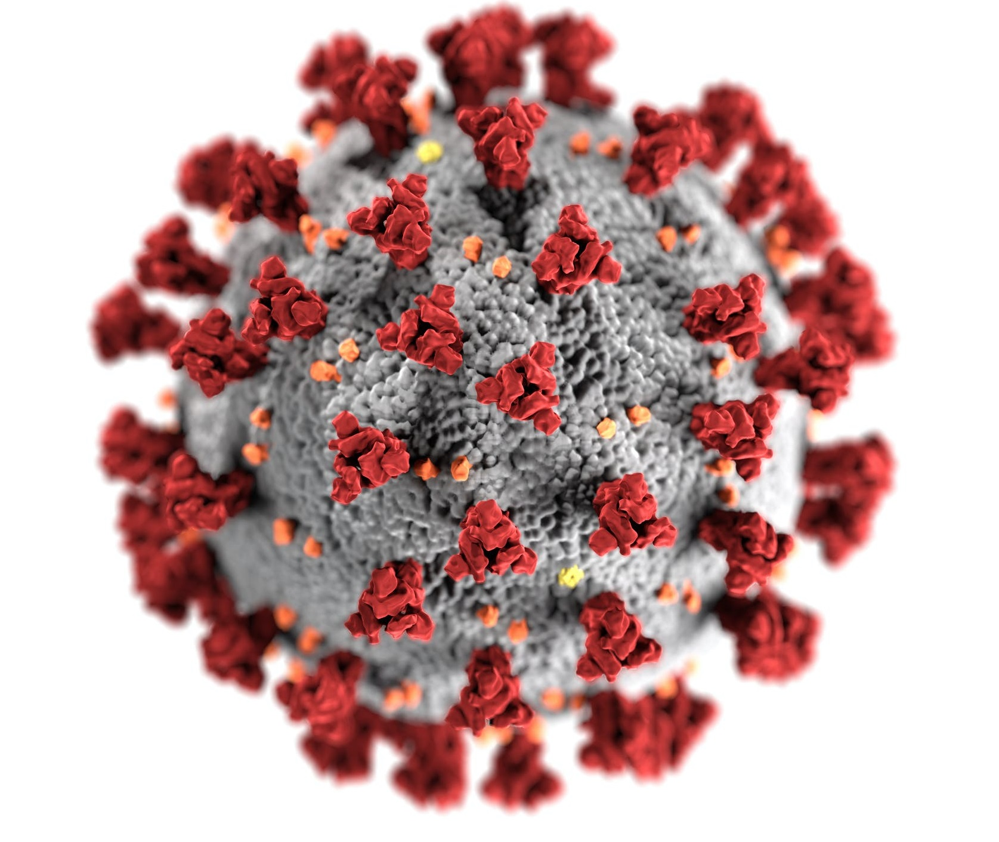

What You Need To Know
Information is flooding from differenct sources, such as the news, articles, and more. We understand that it may sound overwhelming, or you may not know what to believem so we've compiled the facts that you need to be aware of during these times. This information comes from reputable sources, the bibliography is below.
The virus hit us hard. All around the world, people are staying at home, instead of going to school or work. Many are deprived of basic hygiene, from haircuts to dentist appointments. Students who counted down the days to graduate, are stripped of a long-awaited graduation and senior prom, and some schools are getting creative with their resources, such as recreating the school virtually and graduating through Minecraft.

Many are concerned about the government's choices of safety, some even going as far as protesting against the shelter-in-place (CNN 2020). Newsweek.com states that "Despite instruction from lawmakers nationwide—and globally—some Americans are not convinced of the virus's severity and the need to shutdown fixtures of society."
While it is understandable that it may be difficult for some people to stay in quarantine due to their source of income, let's go into the details of how destructive the virus really is.
As of May 18, 2020, there have been 4,618,821 cases of the coronavirus globally, and 311,847 deaths.(According to the World Health Organization.)

How the Virus Spreads
Note: You can spread the virus without showing symptoms.
The virus spreads mostly from person-to-person, through respiratory droplets that carry the virus "when an infected person coughs, sneezes or talks" (CDC.gov). These droplets then enter the mouth or nose, where the virus cells multiply. If the body doesn't fight off the virus by then, it travels to the lungs, where it can become deadly. The body's battle with the rapidly growing virus prevents healthy oxygen transfer. As more immune cells kills the virus-infected cells, pus gets left behind. Many patients recover, but some develop a condition "called acute respiratory distress syndrome (ARDS)" (sciencemag.org). These patients are placed on respirators, but cause many to struggle to breathe, and die.
How To Prevent Spread
Wash your hands
As overused as this phrase is, it is a must to prevent getting and spreading the virus. Washing your hands effectively removes most of the bacteria from your hands and decreases your chances of getting the virus and passing it on to others.
Cough and sneeze in your elbow
This is crucial to help reduce prevention: make sure you are not spreading any droplets that could come from coughs and sneezes. Cover your mouth and nose with masks to protect yourself from getting the virus from others, although the most effective method is staying at home!
Keep a Safe Distance
The CDC recommends that you stay 6 feet apart from others. Remember that people are able to spread virus without showing visible symptoms. Do not attend mass gatherings and stay away from the public.
Clean and Disenfect
According to webmd.com, "The coronavirus can live for hours to days on surfaces like countertops and doorknobs. How long it survives depends on the material the surface is made from." Clean your surfaces!
How To Help Others
Covid-19 is causing many to suffer. You can help by checking out our Small Businesses page to see how businesses are dealing with this pandemic. Make sure to check out the Donations page as well if you are willing to make a donation. Keep looking around our website for more information!